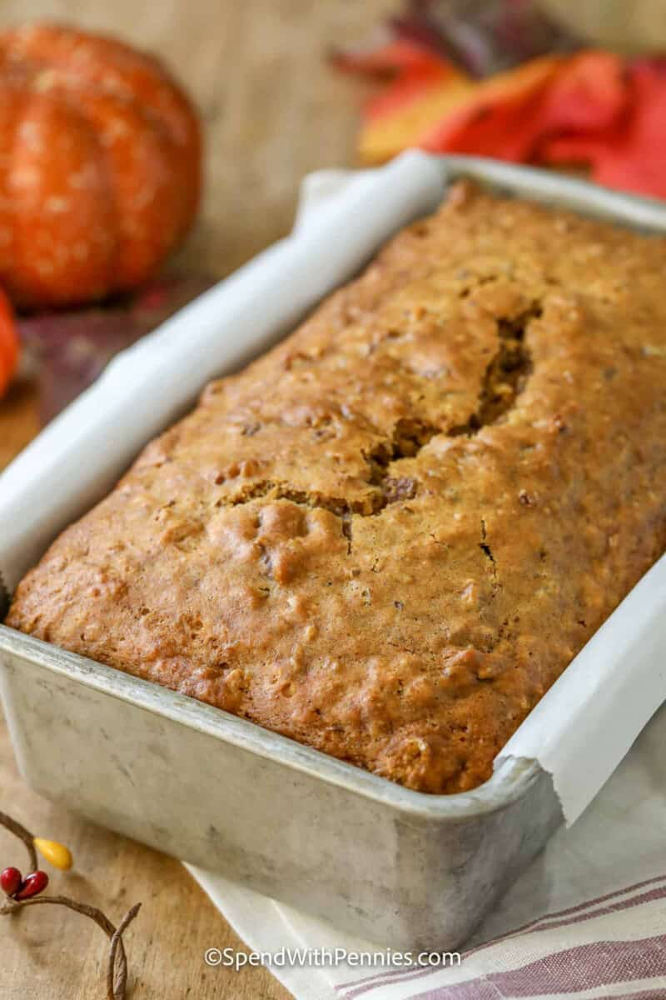

Pumpkin Bread

Description
This homemade pumpkin bread recipe is the perfect fall quick bread!
Ingredients
- Pumpkin – Choose canned pumpkin or pumpkin puree (not pumpkin pie filling). Homemade pumpkin puree can be too moist for this recipe, affecting the final texture.
- Spice – Embrace the flavor of fall by using pumpkin pie spice or make it at home with cinnamon, cloves, ginger, nutmeg, and allspice
- Dry Ingredients – All-purpose flour is the base while baking powder and soda gift it a nice rise.
- Wet Ingredients – Ensure the ingredients are at room temperature for even mixing.
- Optional Add-Ins – Try adding 1 cup raisins or cranberries or substitute pecans for walnuts. Mix in dried fruit and/or chocolate chips. It’s hard to go wrong with add-ins on this one!
Steps
- Combine dry ingredients in a bowl (per the recipe below).
- Whisk wet ingredients & sugar in a separate bowl. Add to dry ingredients just until moist. Stir in optional nuts or chocolate chips, if desired.
- Bake until a wooden pick comes out clean, cool & serve.